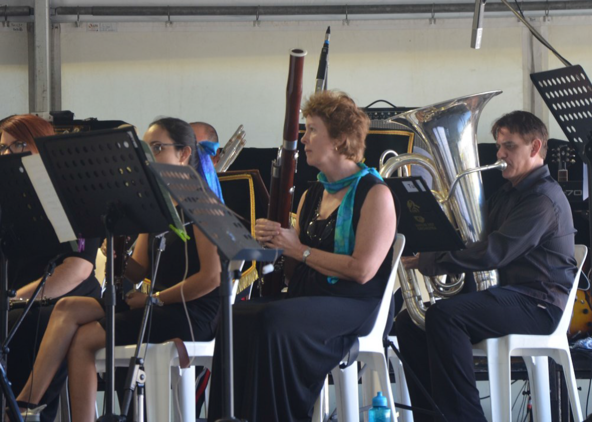

AFCM 25th Anniversary Celebration Concert review
by Helen Land

A very pleasant Sunday afternoon in Queens Gardens was attended by approximately four thousand satis-fied music lovers. This free concert organised to cele-brate the 25th Anniversary of the AFCM was also a fitting opportunity for BRO to celebrate its 15th Anni-versary with it’s first ever outdoor public perfor-mance.
The tastes of all music lovers was satiated. The con-cert opened with the ceremonial and pompous Brass composition by Aaron Copland titled Fanfare for the Common Man, followed by the equally ceremonial Imperial March by William Walton. Genuine fun and musical camaraderie emanated from the perfor-mance by Camerata of St Johns with their virtuosic classical performance. In addition they ably accompa-nied Amy Dickson in her flawless saxophone perfor-mance with her distinctive tone clearly displaying the reason she is sought after around the world.
1RAR Big Band played to the high standard Townsville with which audiences are familiar. They had the audi-ence tapping their feet to their musical and vocal compositions. Cheryl Barker’s powerful soprano rang across the park and most likely was heard on Castle Hill as she sang two arias accompanied by BRO and conducted by UK conductor Nicholas Daniel.
The finale of the afternoon which included musicians from all three ensembles was the 1812 Overture. It was delightful to see the audience enthusiastically participate in this finale. This pleasant afternoon can only be rated as a huge success and may prove to be the first of many performances in years to come.
Upcoming Events
Tuesday 8th March 7.30 pm
Townsville Civic Theatre
Conductor: Richard McIntyre